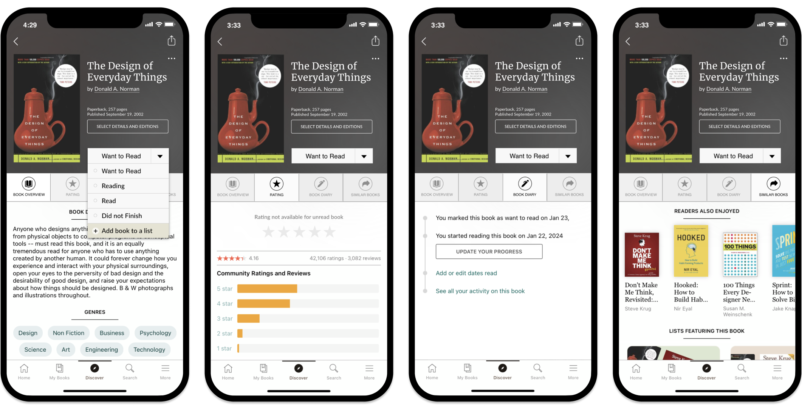
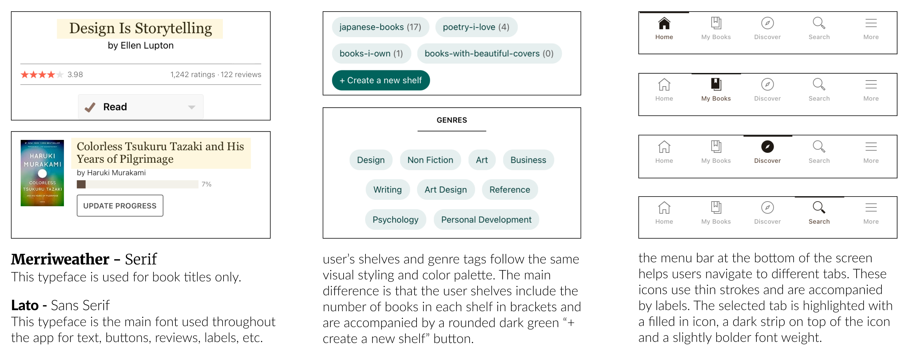
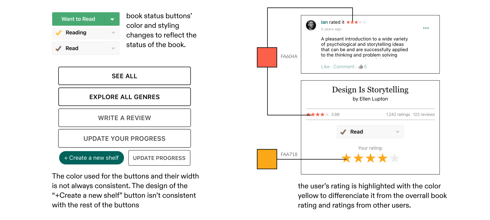
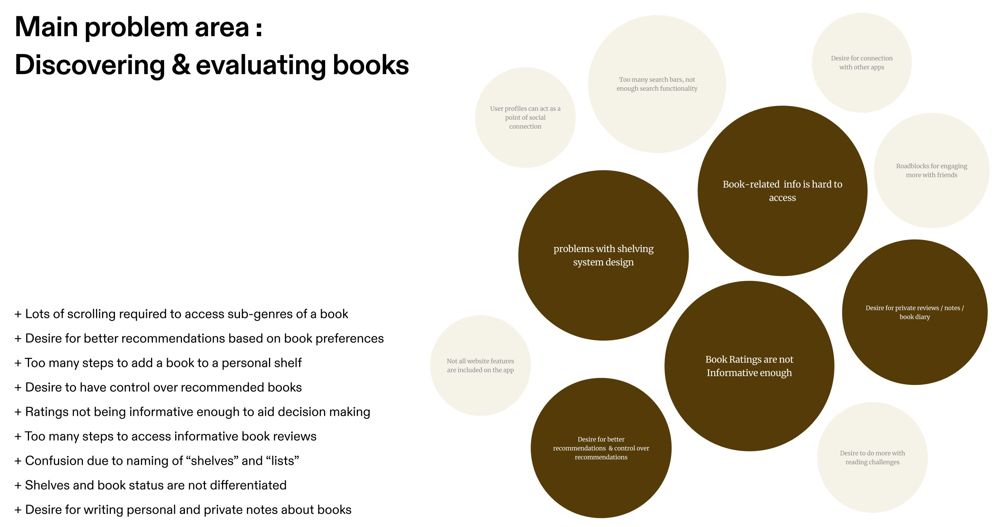

Goodreads — UX Research & Feature Redesign
Goodreads is the world's largest platform for book lovers — but its most-used features have significant usability gaps. I conducted end-to-end UX research and proposed a UI redesign targeting the two areas users found most frustrating: the shelving and reading status system, and the book details page.

Caption. Overview of both redesigns — the revamped shelving system and the new tab-based book details page.
Long story short
Goodreads' most-used features were quietly losing users — so I redesigned the two causing the most friction
I leveraged user research — surveys, interviews, heuristic evaluation, and forum analysis — to find out exactly where Goodreads' shelving and book details features were failing readers, then designed two targeted fixes that stay true to the app's existing design language.
Research
Audited the app, surveyed 20 users, interviewed 2, and cross-checked patterns against App Store reviews and forums to find the real friction points.
Shelving Redesign
Reduced friction and improved clarity when managing books — separating reading status from personal lists and adding the "Did Not Finish" status users had been asking for.
Book Details Redesign
Helped users access different types of book information quickly — replacing one long scroll with four-tab navigation, so ratings, genre, and similar titles are one tap away.
Constraint
Every change had to align with Goodreads' current typography, color palette, and layout conventions — pushing the focus toward structure over aesthetics.
The Problem
The shelving system requires too many steps for common actions, uses unclear visual language that conflates reading status with personal lists, and the book details page buries important information behind excessive scrolling.
These weren't dramatic failures on their own — but together, they shaped how people felt about using the app at all, and several survey respondents had simply stopped using custom shelves entirely.
The Goal
Leverage user research to improve the efficiency, clarity, and usability of Goodreads' shelving and book details features — while staying true to the app's existing design language.
That meant two targeted redesigns grounded entirely in research, not assumption: a clearer, faster shelving system, and a book details page that respects how readers actually look for information.
Research approach
Auditing, asking, listening, and validating before designing anything
Before speaking to any users, I audited the Goodreads app itself against Nielsen Norman Group's 10 usability heuristics, surfacing early violations in visibility of system status, consistency, efficiency, and error prevention. From there, I gathered evidence from four more sources before synthesizing.
Heuristic Evaluation
Documented Goodreads' existing visual design language and interaction patterns to understand what I could and couldn't change.
Survey — 20 participants
Asked regular Goodreads users about their most-used features, biggest frustrations, and the changes they most wanted.
Semi-structured Interviews — 2
Think-aloud sessions where users completed common tasks while narrating their thoughts — surfacing hesitation the survey alone couldn't.
App Reviews & Forums
Cross-checked findings against recent App Store and Google Play reviews, Reddit threads, and Goodreads' own forums.
Synthesizing findings
Used affinity diagramming in FigJam to cluster insights into themes, then an impact-effort matrix to prioritize within a 3-week scope.



Caption. Affinity diagram clustering research findings into themes — used with an impact-effort matrix to prioritize what was worth solving in 3 weeks.
Key insights
Five patterns surfaced consistently across every research source
Survey responses, interviews, and forum threads all converged on the same five problems — regardless of platform or user type.
I never bother with custom shelves anymore. It's just too many taps to get there.
Too many steps
I never really knew if I was filing a book or just marking it.
Conceptual confusion
I have like fifteen books just sitting in 'Currently Reading' that I'm never going to finish. It's embarrassing.
Missing status
I have to scroll forever just to find what genre the book even is.
Buried information
I want to write something like 'this hit different the second time' but I don't want to post it publicly.
No private space
Opportunities
Five problems, two redesigns
Using an impact-effort matrix, I mapped the five research findings to two main design opportunities — the areas where a targeted intervention would have the broadest positive effect.
Clearer shelving system
Separate reading status from personal lists — two things users kept confusing for each other.
Did Not Finish status
Give abandoned books a proper home — not a hacked workaround shelf labeled "DNF."
Fewer steps to organize
Consolidate the multi-modal shelving flow into a single screen with one clear action.
Navigable book details
Replace one long scroll page with tab navigation — get to ratings or genre in one tap.
Private reading diary
Give readers a dedicated space for personal notes, separate from the public review system.
Redesign 01
Revamped shelving system & reading status
Objective: Reduce friction and improve clarity when managing books — directly addressing insights 1, 2, and 3.
Caption. Before screenshot — replace with your image.
Reading status and personal lists were visually indistinguishable — both styled as tags with no hierarchy. Adding a book to a non-default shelf required multiple taps and modal screens.
Caption. After screenshot — replace with your image.
Book Status and Lists are now clearly separated into two distinct sections. A "Did Not Finish" status is added directly to the status menu. The modal and shelf page now share unified visual styling.
Consistent visual and interaction patterns
The redesigned shelving feature follows the same interaction conventions as the rest of the app — new pages slide in from the right, iconography matches the existing system. This addresses the heuristic violation of consistency and standards identified in the audit: users shouldn't have to relearn behaviors for an updated feature.

Easy selection and update of reading status
Tapping the dropdown arrow opens a menu for quickly selecting or changing a book's status — including the new "Did Not Finish" option (insight 3). The button's color updates to reflect the chosen status, providing immediate visual confirmation. This directly fixes the multi-tap friction from insight 1.
Adding books to lists in fewer steps
All lists are consolidated on a single screen, so users can add a book to multiple lists without navigating between pages. Status selection is available from the same screen — replacing the multi-modal process that users described as the reason they'd stopped organizing their libraries (insight 1). A public/private toggle for lists is also introduced, indicated by a lock icon next to the list name.
Redesign 02
Book details navigation
Objective: Help users access different types of book information quickly — directly addressing insights 4 and 5.
Caption. Before screenshot — replace with your image.
Book details, ratings, genres, and recommendations were all on one long-scroll page with no navigation between sections. Ratings appeared before the plot summary, biasing first impressions. No space existed anywhere for personal notes.
Caption. After screenshot — replace with your image.
Four-tab navigation groups content by what users most commonly look for: Book Details, User Ratings, Book Diary, and Similar Books. Title and "Add to List" are anchored at the top. Ratings sit behind their own tab.
Swiping and tapping between tabs
Users can switch between tabs by swiping or tapping, accommodating different interaction preferences. The active tab's icon turns black — a clear visual indicator of current location that the original page completely lacked. The tab structure means users can jump directly to ratings or similar books without scrolling through content they didn't come for (insight 4).
Impact
What these changes could mean for Goodreads users
Fewer steps to organize books
Adding a book to a custom list now happens from a single screen instead of navigating through multiple modals — removing the friction that was causing users to abandon the shelving feature entirely.
Clearer distinction between status and lists
Separating Book Status from Lists removes a conceptual ambiguity that confused even experienced users, and creates a natural home for the "Did Not Finish" status they'd been asking for.
Faster access to key book information
Tab navigation eliminates the excessive scrolling needed to find ratings, genres, and similar titles — and removes the bias that came from showing star ratings before the plot summary.
A private space alongside the public one
The Book Diary gives readers a dedicated place for personal notes and re-reading annotations — a feature users had been improvising with third-party apps — without disrupting the existing public review system.
Challenges
Working within real constraints
Reducing steps without hiding features
Simplifying the shelving flow meant consolidating screens and removing intermediate steps — but advanced options like creating a new list or editing privacy settings still needed to be discoverable. I resolved this through careful hierarchy decisions: the most common action is immediately visible, while less-frequent options follow the app's existing secondary interaction patterns so nothing feels hidden.
Designing within Goodreads' visual language
All proposed changes had to align with Goodreads' current typography, color palette, iconography, and layout conventions. Staying within these constraints meant I couldn't fix every visual problem I found — but it forced me to focus on what mattered most: structural and interaction improvements that feel like a natural evolution of the existing experience.
Reflection
Working solo, and grounding decisions in data
Working as a solo designer on this project was genuinely different from the group dynamic I was used to. I missed having teammates to sanity-check ideas against — there were moments when I wasn't sure if a decision was well-reasoned or just familiar because I'd been staring at it too long. I compensated by going back to the research data whenever I felt uncertain: if I couldn't connect a decision to a specific finding, I reconsidered it.
The constraint of working within Goodreads' existing design language was, in retrospect, one of the most valuable parts of the project. It pushed me to focus on usability improvements rather than visual ones — and helped me realize how much design impact lives in structure, flow, and hierarchy rather than aesthetics. What I'd do differently: find a way to usability test the prototypes with real users before finalizing. The research grounded my decisions well, but direct feedback on the redesigned flows would have added another layer of confidence.